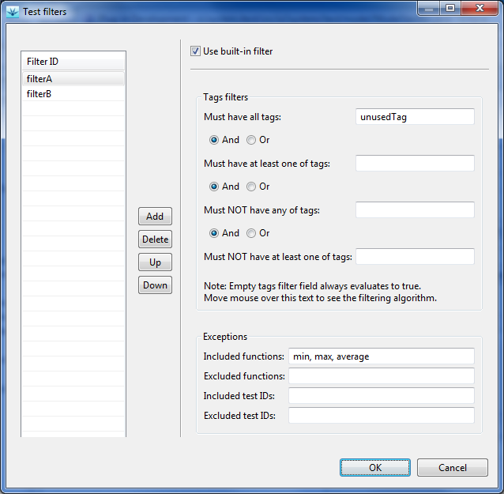
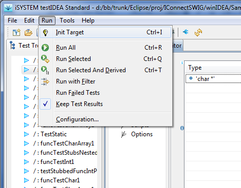

Run All executes all tests defined in testIDEA.Run Selected executes all tests, which
are selected in test tree. We can select multiple tests to run. Even
if any of selected tests has derived tests, they are NOT run with
this option.Run Selected And Derived executes all
tests, which are selected in test tree. We can select multiple tests
to run. If any of selected tests has derived tests, they are also run
with this option.Run with Filter executes all tests,
which satisfy conditions in filter. After executing this command we
can select a filter to be used for tests specification execution.
There exist two possibilities for fitering:
min(),
max(), and average():

Note that we have used a tag, which is not used in any of our test specifications (in the example we used'unusedTag').
Otherwise all tests would satisfy the tags filter. Now only tests
specifications for functions mentioned as exceptions will be
executed, while others will not pass the tags filter.
Run Failed Tests executes all tests,
which have failed in the previous run.Run | Run Failed
Tests. Only the tests, which have failed on the previous run will be
executed.Keep test results toggles
erasing of test results on test start. When the option is selected,
the Run command does not erase results of tests, which
are not executed. This way we can execute only tests, which have
failed, and get report for all tests.IMPORTANT! Use this functionality with caution, because fix for one test may break other tests, which have already passed. Do not use this functionality on tests, which are interdependent, or which can be influenced by the fix of the problem. In such cases always rerun all tests!
